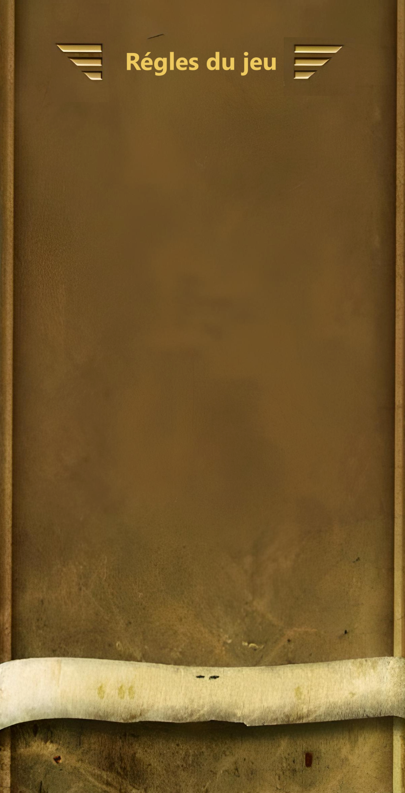

Si vous êtes un amateur de jeux d'aventure, Temple Run est le jeu qu'il vous faut. Arriverez-vous à jouer à ce jeu passionnant et récupérez l'idole ?
Temple Run est un jeu de course sans fin où notre héros doit échapper aux créatures qui le poursuivent et à tous les obstacles et pièges qui jalonnent son parcours en contrôlant notre héros qui tente de s'échapper du Temple. Traversez des falaises, des forêts et même des mines et aidez ce courageux chasseur de trésor à s'échapper avec le prix en or. Dépêchez-vous ! Les méchants singes monstres vous suivent !
Comment jouer :
- - flèche haut = sauter
- - flèche vers le bas = glisser
- - flèche droite et gauche = tourner et se déplacer